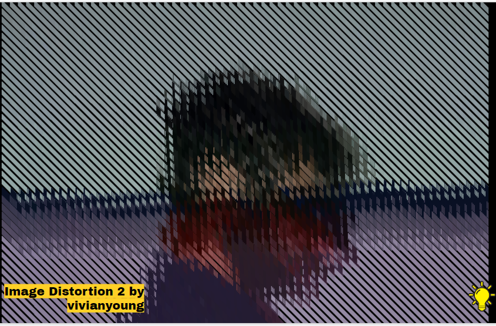
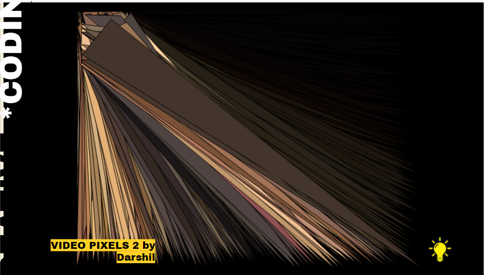
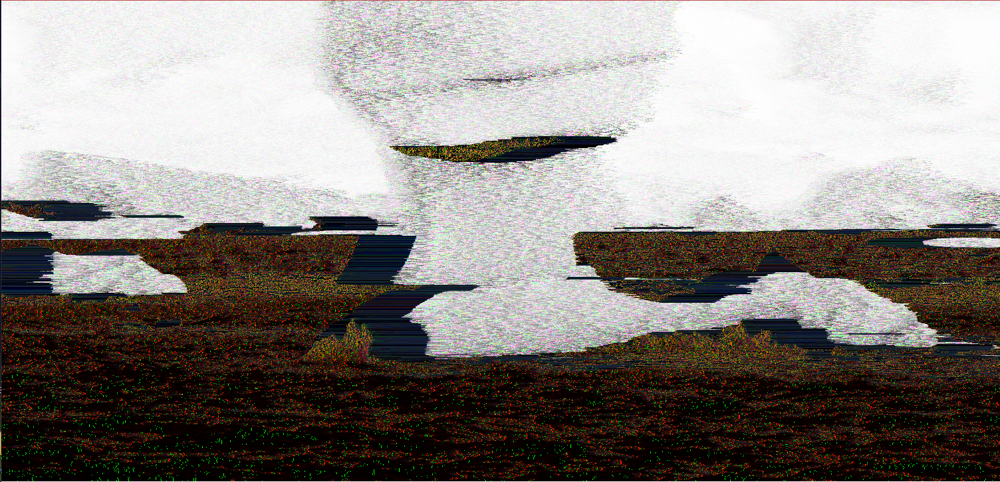
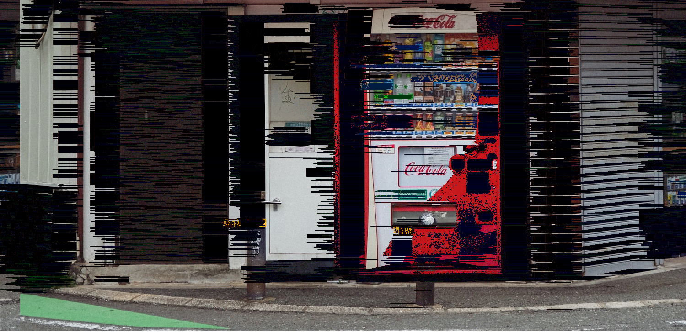
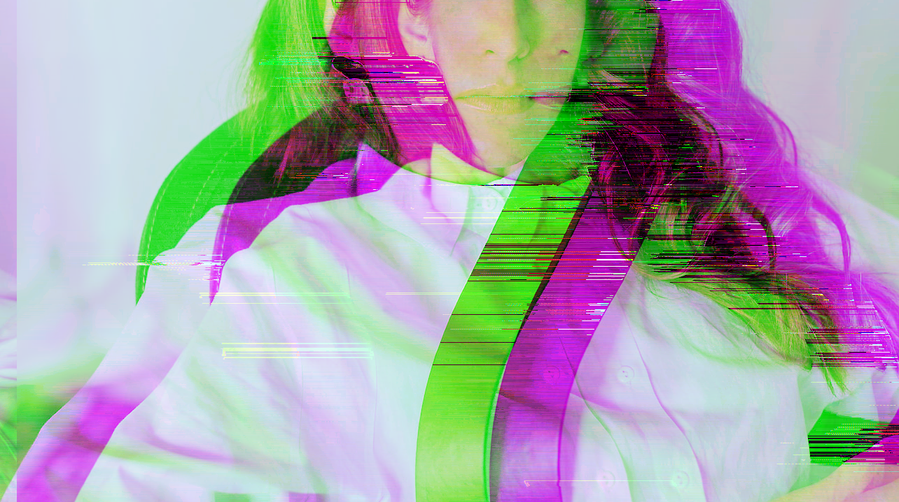

Experiment 4 - Image and Video
Imitate
 The pieces of work we most closely imitated were Image Distortion 2 and Video Pixels 2, specifically the aspects where we are distorting images and accessing the pixel values from the images that are put in. Additionally there was a work that utlizied an API to get random gifs, we similarly implemented an AI that gets the window size of the user and gets a random image of that size
Integrate
We integrated sorting algorithims into this project in order to distort the images, specifically bubble sort and quicksort were used with the help of chatGPT, however the implementation of these algorithims ended up being less interesting than the incomplete algorithims.
Integrating the API into this project was also a core part of this experiment, it allowed the algorithims to be tested on multiple images, it also has a slot machine type effect where some of the effects are more satisfying to look at than others, which personally made me refresh the page quite a few times
Innovate
Turns out the most interesting results from this experiment actually came from just doing basic scrambles of the image for every draw(), there is a end result sort for this algorithim, but it is not sorting it into an actual order, it just keeps trying to make comparisons based on pixel colors and at somepoint it will conclude.
  These are some of the different algorithims that can run on the images provided by the API
Reflection
This is kind of the weirdest project I have done so far, not as in the results that came from it, but the fact that this was mainly made at random and it is also easily my favorite project that I have worked on so far. Additionally this was the first time I ever used an API, which is something I am going to try and incorporate a lot more into my future projects. The API makes this possible, without a random set of images to work on this entire project would fall flat.
- I made the initial distortion algorithim and implemented the API
- The highs of this project were initially working on it, the pixel distortion was a total accident.
- The low of this project was ironically implementing a working sorting algorithim, the result was super boring, it basically just made the entire screen a grey gradient